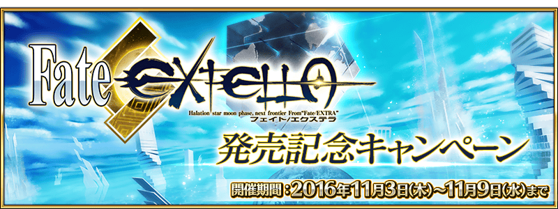
紀念「Fate/EXTELLA」發售，舉辦「Fate/EXTELLA」發售記念宣傳活動！
◆舉辦期間◆
2016年11月2日(三) 23:00～11月9日(三) 13:59

紀念「Fate/EXTELLA」發售，在「Fate/EXTELLA」活躍的一部份Servant的戰鬥動作及寶具演出翻新！
◆對象Servant◆
阿提拉
Emiya
◆翻新時間◆
2016年11月2日(三) 23:00～
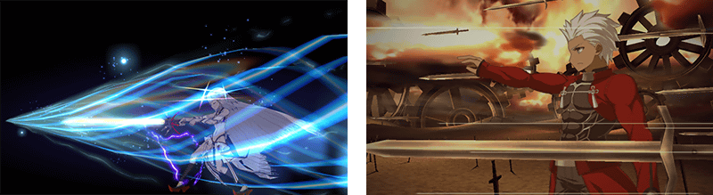
配合戰鬥動作及寶具演出翻新，追加阿提拉的幕間物語！
◆追加時間◆
2016年11月2日(三) 23:00～
紀念「Fate/EXTELLA」發售，實施「Fate/EXTELLA」發售記念關卡！
通過在迦勒底之門以期間限定出現的關卡的話，可以獲得「Fate/EXTELLA」發售記念關卡限定概念禮裝。
◆舉辦期間◆
2016年11月2日(三) 23:00～11月9日(三) 13:59
◆「Fate/EXTELLA」發售記念關卡限定概念禮裝◆
| 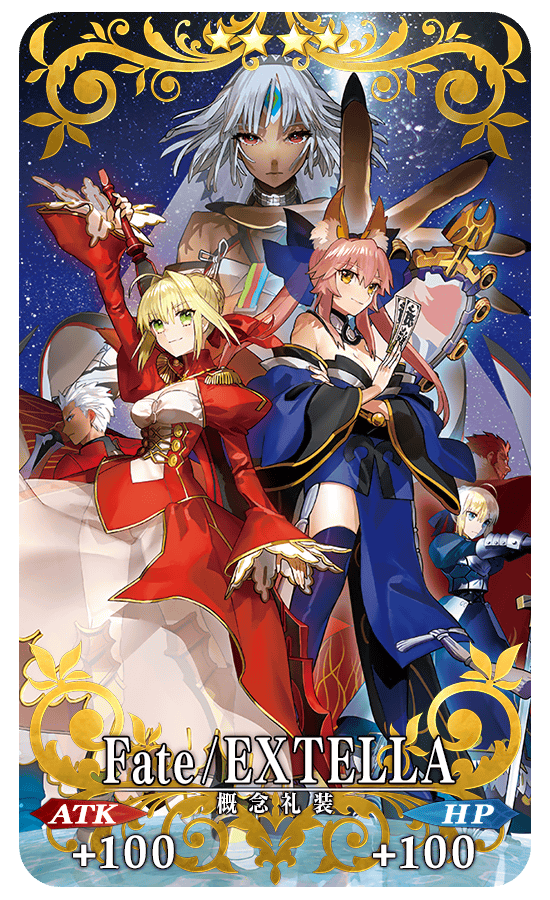 |
★★★★SR Fate/EXTELLA ATK 100（最大：100） HP 100（最大：100） 技能 自身的Critical威力提升15%＆賦予每回合星星3個獲得狀態 |
以與「Fate/EXTELLA」關係匪淺的「Fate/EXTRA」舞台月海原學園制服為形象，新魔術禮裝「月の海の記憶」登場！
獲得魔術禮裝為目標的關卡在迦勒底之門以期間限定出現。
裝備新獲得的魔術禮裝的話，可以使用新的Master技能。
◆舉辦期間◆
2016年11月2日(三) 23:00～11月9日(三) 13:59
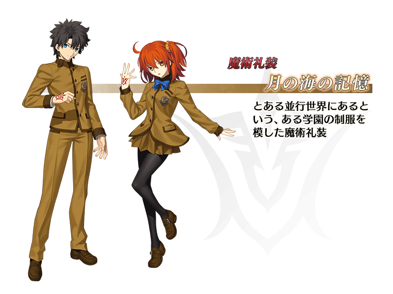
紀念「Fate/EXTELLA」發售，從發售記念概念禮裝之中贈送喜愛的1張。
11月3日(四) AM3:00以後，在最初進行登入時會賦予「EXTELLAチケット」至禮物箱。
從禮物箱領取「EXTELLAチケット」後，在達文西工房内的「活動道具交換」選項中，從發售記念概念禮裝6張之中交換喜愛的1張。
※交換後的概念禮裝會送至禮物箱。
※交換後「EXTELLAチケット」會消失。
※未從禮物箱領取以及沒進行交換的情況，在交換期間結束後「EXTELLAチケット」都會消失。
◆「EXTELLAチケット」配布期間◆
2016年11月3日(四) AM3:00～11月10日(四) AM2:59
◆概念禮裝交換期間◆
2016年11月3日(四) AM3:00～11月16日(三) 12:59
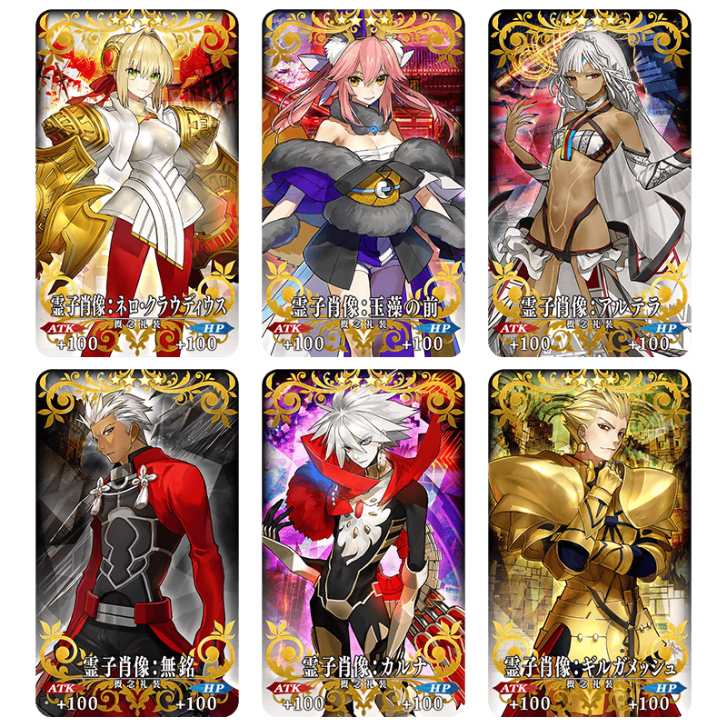
★★★★SR
靈子肖像
ATK 100 （最大：100 ） HP 100 （最大：100 ）
技能
通過關卡時獲得的Master經驗值增加50
※不管哪張卡面性能都是一致的。
在2016年11月2日(三)Niconico生放送配信的特別節目「Fate/Grand Order 迦勒底放送局SP”EXTELLA”發售記念特番」進行的節目連動宣傳活動的報酬贈送！
※特別番組及連動宣傳活動已結束。
詳細請在 特設頁面 確認。
◆對象期間◆
2016年11月3日(三)AM3:00 ～11月10日(四) AM2:59
|
◆對象◆ ◆對應內容◆ ◆領取條件◆ |
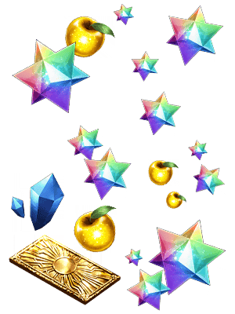 |
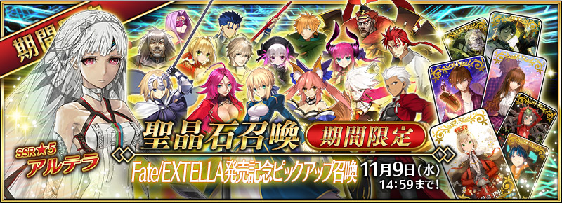
◆「Fate/EXTELLA發售記念Pick Up召喚」期間◆
期間：2016年11月2日(三) 23:00～11月9日(三) 13:59
以期間限定舉辦「Fate/EXTELLA發售記念Pick Up召喚」舉辦！
Fate/EXTELLA發售記念Pick Up召喚為只能召喚「Fate/EXTELLA」及「Fate/EXTRA」關連Servant，「Fate/EXTELLA」及「Fate/EXTRA」關連Servant確定召喚。
另外，以「Fate/EXTRA」關連角色為主題的★5(SSR)概念禮裝及★4(SR)概念禮裝Pick Up！
詳情請在聖晶石召喚畫面左下的召喚詳細確認。
Pick Up期間中，Pick Up概念禮裝的出現機率提升！
10次召喚中★4(SR)以上1張確定和★3(R)以上的Servant1位確定！
※★4(SR)以上確定包含Servant和概念禮裝。
※所謂「出現機率UP」意指比同稀有度的Servant及概念禮裝出現機率更高的設定。
◆召喚對象★5(SSR)Servant◆
| 職階 | 稀有度 | 名稱 |
|---|---|---|
| Saber | ★★★★★ | 阿爾托莉亞・潘德拉剛 |
| Saber | ★★★★★ | 阿提拉 |
| Lancer | ★★★★★ | 迦爾納 |
| Rider | ★★★★★ | 弗朗西斯・德雷克 |
| Caster | ★★★★★ | 玉藻前 |
| Ruler | ★★★★★ | 貞德 |
◆召喚對象★4(SSR)Servant◆
| 職階 | 稀有度 | 名稱 |
|---|---|---|
| Saber | ★★★★ | 尼祿・克勞狄烏斯 |
| Saber | ★★★★ | 高文 |
| Archer | ★★★★ | Emiya |
| Lancer | ★★★★ | 伊莉莎白・巴托里 |
| Lancer | ★★★★ | 李書文 |
| Lancer | ★★★★ | 弗拉德三世〔EXTRA〕 |
| Caster | ★★★★ | 童謠 |
※Pick Up期間中，尼祿・克勞狄烏斯、高文就算在各章通過前也能入手。
※11/2(三)修正
◆召喚對象★3(R)Servant◆
| 職階 | 稀有度 | 名稱 |
|---|---|---|
| Archer | ★★★ | 羅賓漢 |
| Lancer | ★★★ | 庫・夫林 |
| Rider | ★★★ | 美杜莎 |
| Berserker | ★★★ | 呂布奉先 |
| 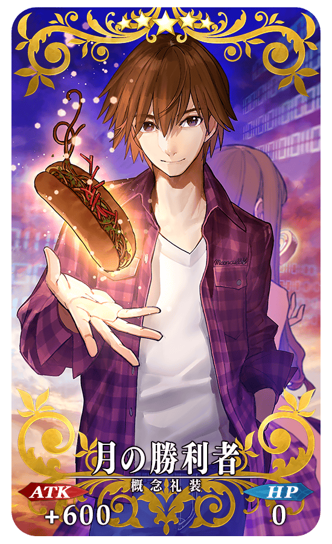 |
★★★★★SSR 月の勝利者 ATK 600（最大：2400） HP 0 技能 自身的Buster卡的性能提升10％＆Critical威力提升20％ |
| 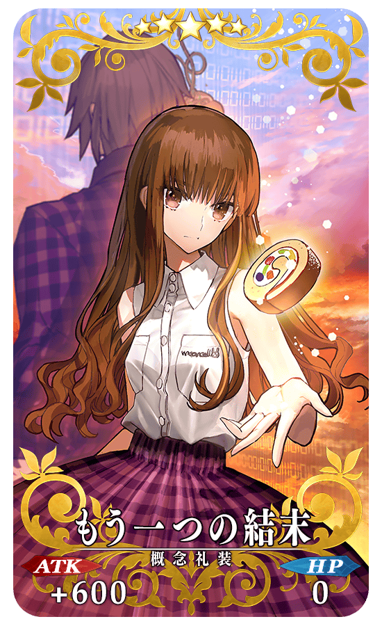 |
★★★★★SSR もう一つの結末 ATK 600（最大：2400） HP 0 技能 自身的Arts卡的性能提升10％＆Critical威力提升20％ |
| 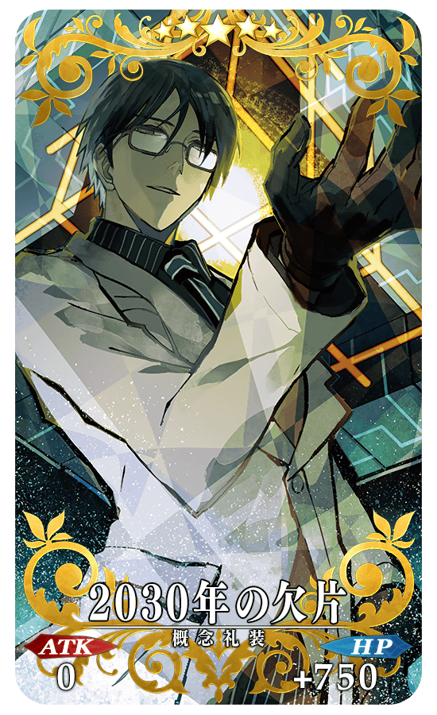 |
★★★★★SSR 2030年の欠片 ATK 0 HP 750（最大：3000） 技能 對自身賦予每回合Critical星星8個獲得狀態 |
| 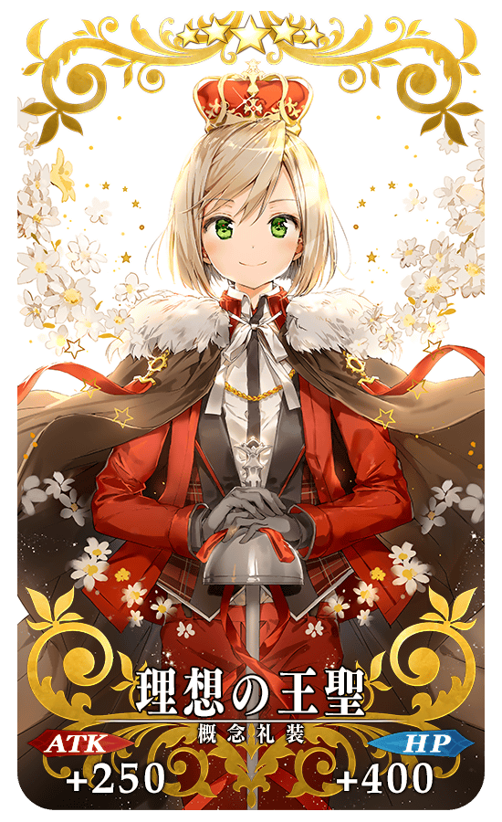 |
★★★★★SSR 理想の王聖 ATK 250（最大：1000） HP 400（最大：1600） 技能 我方全體＜含候補＞的最大HP提升1000 |
| 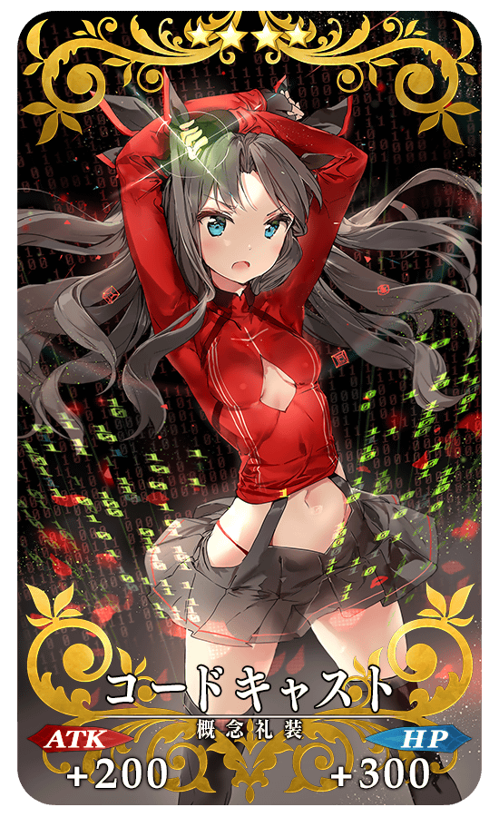 |
★★★★SR コードキャスト ATK 200（最大：750） HP 300（最大：1125） 技能 自身的攻擊力與防禦力提升25％(3回合) |
| 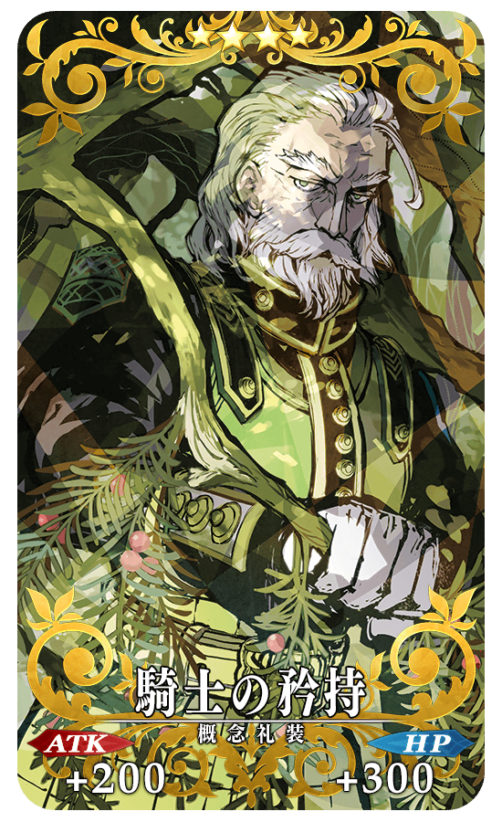 |
★★★★SR 騎士的矜持 ATK 200（最大：750） HP 300（最大：1125） 技能 自身的Critical威力提升40％＆防禦力下降20% |
| 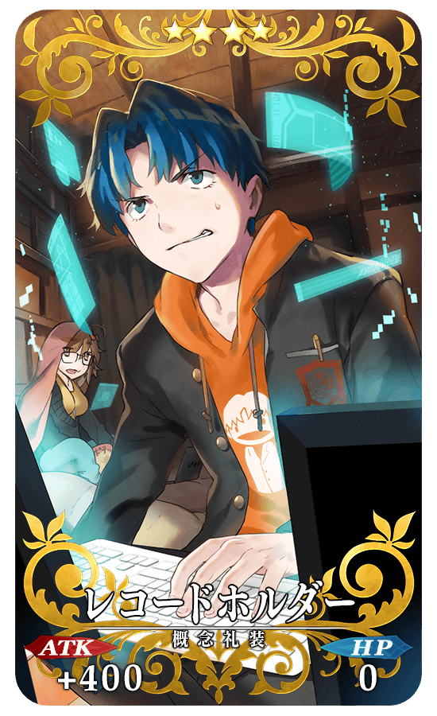 |
★★★★SR レコードホルダー ATK 400（最大：1500） HP 0 技能 自身的弱體賦予成功率提升15% |

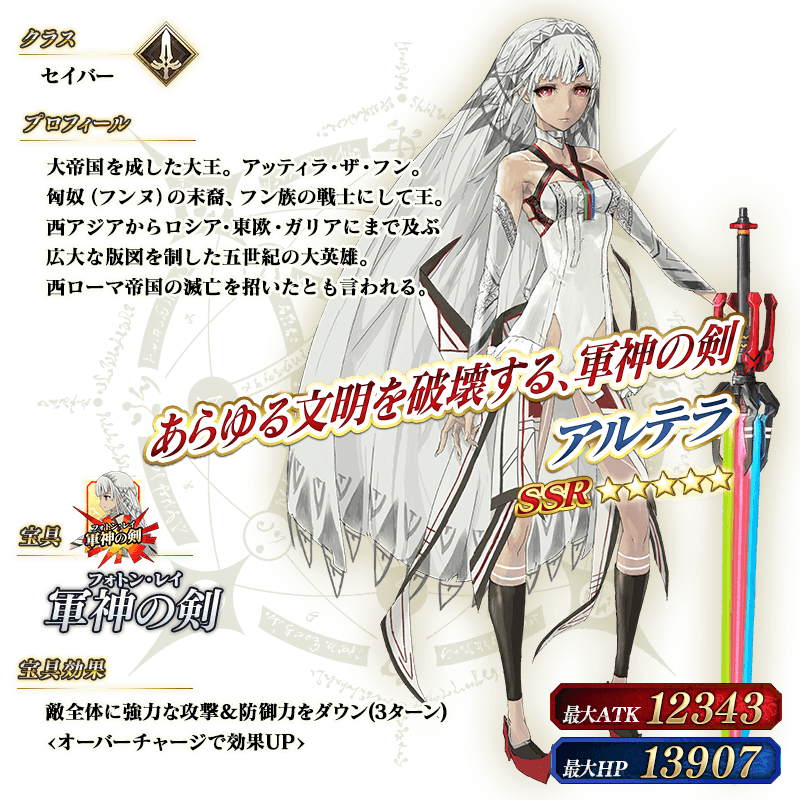